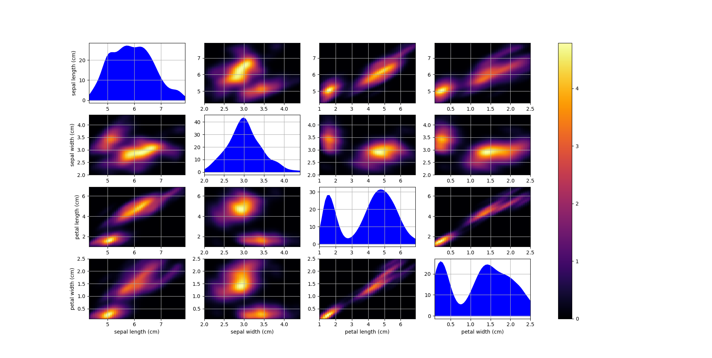

scludam.hkde module
Module for Kernel Density Estimation with variable bandwidth matrices.
The module provides a class for multivariate Kernel Density Estimation with a bandwidth matrix per observation. Such matrices are created from a baseline bandwidth calculated from the Plugin method. Variable errors and covariances can be added to the matrices.
- class scludam.hkde.PluginSelector(nstage: Optional[int] = None, pilot: Optional[str] = None, binned: Optional[bool] = None, diag: bool = False)[source]
Bases:
BandwidthSelectorBandwidth selector based on the Plugin method.
It uses the Plugin method with unconstraned pilot bandwidth 1 2 implementation in the ks R package 3. See the ks package documentation for more information on parameter values. All attributes are passed to
ks::Hpifunction.- Parameters
nstage (int, optional) – Number of calculation stages, can be 1 or 2, by default 2.
pilot (str, optional) – Kind of pilot bandwidth.
binned (bool, optional) – Use binned estimation, by default False.
diag (bool, optional) – Whether to use the diagonal bandwidth, by default False. If true,
ks::Hpi.diagis used.
References
- 1
Chacon, J.E., Duong, T. (2010) Multivariate plug-in bandwidth selection with unconstrained pilot matrices. Test, 19, 375-398.
- 2
Chacon, J.E., Duong, T. (2018) Multivariate Kernel Smoothing and Its Applications (pp. 43-66).
- 3
Duong, T. (2013). ks: Kernel Smoothing. R package version 1.13.3. https://CRAN.R-project.org/package=ks
- class scludam.hkde.HKDE(bw: Union[BandwidthSelector, Number, ndarray[Any, dtype[number]]] = PluginSelector(nstage=None, pilot=None, binned=None, diag=False), kernels: Optional[Union[ndarray[Any, dtype[ScalarType]], List, Tuple]] = None, weights: Optional[Union[ndarray[Any, dtype[number]][ndarray[Any, dtype[number]]], List[Number], Tuple[Number, ...]]] = None, covariances: Optional[ndarray[Any, dtype[number]]] = None, data: Optional[ndarray[Any, dtype[number]][ndarray[Any, dtype[number]]]] = None, n: Optional[int] = None, d: Optional[int] = None, n_eff: Optional[int] = None, eff_mask: Optional[Union[ndarray[Any, dtype[ScalarType]], List, Tuple]] = None, maxs: Optional[ndarray[Any, dtype[number]][ndarray[Any, dtype[number]]]] = None, mins: Optional[ndarray[Any, dtype[number]][ndarray[Any, dtype[number]]]] = None)[source]
Bases:
objectKernel Density Estimation with variable bandwidth matrices (H).
Only for multivariate data (2d-nd). As it does not uses KDE by Fast Fourier Transform, it may take some time for big datasets.
- Variables
bw (Union[BandwidthSelector, Number, NumericArray], optional) –
Bandwidth to be used, by default an instance of
PluginSelector. It can be:an instance of
BandwidthSelector: the base bandwidth is calculated using the given selector.a Number: the base bandwidth is calculated as a diagonal matrix with the given value.
an Array: the base bandwidth is taken as the given array. The array shape must be (n, d, d) where n is the number of observations and d is the number of dimensions.
Examples
1import matplotlib.pyplot as plt 2from sklearn.datasets import load_iris 3 4from scludam import HKDE 5 6iris = load_iris() 7 8hkde = HKDE().fit(iris.data) 9 10print(hkde.pdf(iris.data)) 11# [1.41917213e+00 4.68331703e-01 4.92541896e-01 1.03268828e+00 12# ... 13# 4.35570423e-01 1.72914477e-01] 14hkde.plot() 15plt.show()
- set_weights(weights: Union[ndarray[Any, dtype[ScalarType]], List, Tuple])[source]
Set the weights for each data point.
Set a weight value for each data point, between 0 and 1.
- fit(data: ndarray[Any, dtype[number]][ndarray[Any, dtype[number]]], err: Optional[ndarray[Any, dtype[number]][ndarray[Any, dtype[number]]]] = None, corr: Optional[ndarray[Any, dtype[number]]] = None, weights: Optional[Union[ndarray[Any, dtype[number]][ndarray[Any, dtype[number]]], List[Number], Tuple[Number, ...]]] = None, *args, **kwargs)[source]
Fit a KDE model to the provided data.
Creates covariances matrices and kernel instances.
- Parameters
data (Numeric2DArray) – Data.
err (OptionalNumeric2DArray, optional) – Error array of shape (n, d), by default None. Errors are added to the base bandwidth matrix to create individual H matrices per datapoint.
corr (OptionalNumericArray, optional) – Correlation coeficients, by default None. Coeficients are added to the base bandwith matrix to create individual H matrices per datapoint. Can be one of:
NumericArray of shape (d, d): global correlation matrix. Applied in every bandwidth matrix H.
Numeric2DArray of shape (n, (d * (d - 1) / 2): individual correlation matrices. Each column of the array represents a correlation between two variables, for all observations. Order of columns must follow a lower triangle matrix. For example: for four variables, lower triangle of corr matrix looks like:
corr(v1, v2) corr(v1, v3), corr(v2, v3) corr(v1, v4), corr(v2, v4), corr(v3, v4)
So a valid
corrarray for two datapoints would be:np.array([ [ corr1(v1, v2), corr1(v1, v3), corr1(v2, v3), corr1(v1, v4), corr1(v2, v4), corr1(v3, v4) ], [ corr2(v1, v2), corr2(v1, v3), corr2(v2, v3), corr2(v1, v4), corr2(v2, v4), corr2(v3, v4) ], ])
weights (OptionalNumeric1DArrayLike, optional) – Weights to be used for each data point, by default None. If None, all datapoints have the same weight.
- Returns
Instance of
HKDE.- Return type
Notes
Base bandwidth matrix is calculated from the
bwparameter. If no additional parameters are provided, the base bandwidth matrix is used for all datapoints. Iferrand/orcorrare provided, they are used to create individual covariance matrices for each datapoint 5. The final matrix used for each kernel is the sum of the base matrix and the individual covariance matrix, which is equivalent to convolving two gaussian kernels, one for the base bandwidth matrix and one for the individual covariance matrix. The base bandwidth is considered as the minimum bandwidth of the KDE process, for a data point without uncertainty, while the final matrix incorporates the uncertainty if provided.References
- 5
Luri, X. et al. (2018). Gaia Data Release 2: using Gaia parallaxes. Astronomy and Astrophysics, 616, A9. doi: 10.1051/0004-6361/201832964
- pdf(eval_points: ndarray[Any, dtype[number]][ndarray[Any, dtype[number]]], leave1out: bool = True)[source]
Probability density function.
Evaluate the probability density function at the provided points, using the fitted KDE model.
- Parameters
eval_points (Numeric2DArray) – Observation or observations to evaluate the PDF at.
leave1out (bool, optional) – Wether to set weigth to 0 for the point being evaluated, by default True.
- Returns
PDF values for the provided points.
- Return type
Numeric1DArray
- Raises
Exception – If the KDE model is not fitted.
ValueError – If the shape of the provided points is not compatible with the fitted KDE model.
- plot(gr: int = 50, figsize: Tuple[int, int] = (8, 6), cols: Optional[str] = None, **kwargs)[source]
Plot the KDE model applied in a grid.
Creates a pairplot of the KDE model applied in a grid that spans between the data max and min values for each dimension.
- Parameters
gr (int, optional) – Grid resolution, number of bins to be taken into account for each dimension, by default 50. Note that data dimensions and grid resolution determine how many points are evaluated, as
eval_points=gr**dims. A highgrvalue can result in a long computation time.figsize (Tuple[int, int], optional) – Figure size, by default (8, 6)
cols (Optional[str], optional) – Column names to plot over the axes, by default None.
- Returns
Figure with the pairplot.
- Return type
matplotlib.figure.Figure
- Raises
Exception – If the KDE model is not fitted yet.